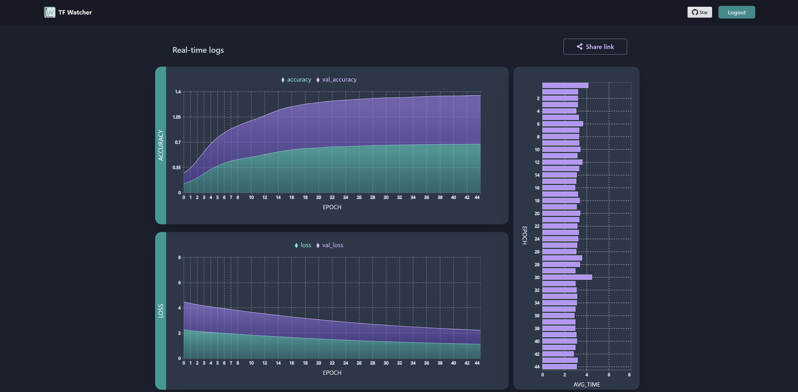
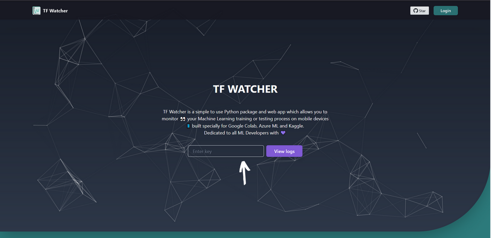

Using the Web App
TF Watcher Webapp is built with React, Chakra-UI and Firebase SDK. The main aim of this application is to monitor ML training or testing process. It is connected with Firebase, to get real time updates and show graphs for the same.
Try out the web app here
Features
Authentication
Connecting with Firebase Realtime Database
Read data and format it to display charts
Deployed to Azure Static Webapp
Tests (WIP)
Using the web app
Using this web app is indeed quite simple, you would need to be logged in with Google and enter the ID generated by the Python package.
You can also share the live page for your logs or the previous saved version with others.
Development setup
You will require Yarn or npm to be able to run this application locally. Download npm from here and Yarn from here .
To setup tfwatcher webapp and get all its dependencies, run the following:
git clone https://github.com/Rishit-dagli/TF-Watcher.git
# or clone your own fork
cd webapp
yarn install
To run the application locally:
yarn start
To create a build version:
yarn run build